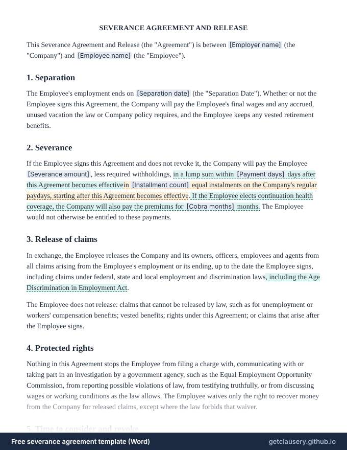

Severance agreement template — free, editable .docx
A severance agreement with a release of claims: the separation date, final pay owed either way, severance in a lump sum or instalments, optional paid health coverage, a release of claims with clear exceptions, protected rights, the review and revocation periods required for employees aged 40 and over, and optional non-disparagement and reference terms.

Free, with unlimited documents and no sign-up. Your answers stay in your browser. Who it is for: Employers offering severance in exchange for a release of claims, and HR teams who want a clear, balanced starting point for their lawyer to review.
Updated · Word (.docx) · Free to use and adapt
Need more than one? Download all 87 templates as one .zip file.
What is in the severance agreement
- Separation date and final pay
- Severance amount: lump sum or instalments
- Optional paid health coverage
- Release of claims and what is not released
- Protected rights to contact government agencies
- Advice to consult a lawyer
- Time to consider, and 7 days to revoke for employees 40 and over
- Return of property, optional non-disparagement and reference
Read the full template
This is the complete wording. [Labels] are filled in from your answers, and highlighted text only appears when it applies; hover over it to see when.
SEVERANCE AGREEMENT AND RELEASE
This Severance Agreement and Release (the "Agreement") is between [Employer name] (the "Company") and [Employee name] (the "Employee").
1. Separation
The Employee's employment ends on [Separation date] (the "Separation Date"). Whether or not the Employee signs this Agreement, the Company will pay the Employee's final wages and any accrued, unused vacation the law or Company policy requires, and the Employee keeps any vested retirement benefits.
2. Severance
If the Employee signs this Agreement and does not revoke it, the Company will pay the Employee [Severance amount], less required withholdings, in a lump sum within [Payment days] days after this Agreement becomes effectivein [Installment count] equal instalments on the Company's regular paydays, starting after this Agreement becomes effective. If the Employee elects continuation health coverage, the Company will also pay the premiums for [Cobra months] months. The Employee would not otherwise be entitled to these payments.
3. Release of claims
In exchange, the Employee releases the Company and its owners, officers, employees and agents from all claims arising from the Employee's employment or its ending, up to the date the Employee signs, including claims under federal, state and local employment and discrimination laws, including the Age Discrimination in Employment Act.
The Employee does not release: claims that cannot be released by law, such as for unemployment or workers' compensation benefits; vested benefits; rights under this Agreement; or claims that arise after the Employee signs.
4. Protected rights
Nothing in this Agreement stops the Employee from filing a charge with, communicating with or taking part in an investigation by a government agency, such as the Equal Employment Opportunity Commission, from reporting possible violations of law, from testifying truthfully, or from discussing wages or working conditions as the law allows. The Employee waives only the right to recover money from the Company for released claims, except where the law forbids that waiver.
5. Time to consider and revoke
The Company advises the Employee in writing to consult a lawyer before signing. The Employee has [Consideration days] days to consider this Agreement and may revoke it within 7 days after signing by written notice to [Revocation contact]. This Agreement becomes effective on the eighth day after the Employee signs, if not revoked. The Employee has [Consideration days] days to consider this Agreement, and it becomes effective when the Employee signs it.
6. Other terms
The Employee will return all Company property by [Property return date]. The Employee will not make false or disparaging statements about the Company, and the Company will instruct [Non disparagement contacts] not to make false or disparaging statements about the Employee, subject to the protected rights above. In response to reference requests, the Company will confirm only the Employee's job title and dates of employment.
This Agreement is not an admission of wrongdoing by either party. It is governed by the laws of [Governing law] and is the entire agreement on its subject.
Company: ____________________________ By: [Company signatory] Date: ______________
Employee: ____________________________ [Employee name] Date: ______________
The questions you answer
Clausery turns the template into a short questionnaire. Optional parts only appear when they apply.
| Question | Type | Asked when |
|---|---|---|
| Employer name | Short text | Always |
| Employee name | Short text | Always |
| Separation date | Date | Always |
| Severance amount | Money | Always |
| Is lump sum | Yes / no | Always |
| Payment days | Number | If “Is lump sum” is yes |
| Installment count | Number | If “Is lump sum” is no |
| Has benefits continuation | Yes / no | Always |
| Cobra months | Number | If “Has benefits continuation” is yes |
| Is age 40 or over | Yes / no | Always |
| Consideration days | Number | Always |
| Revocation contact | Short text | If “Is age 40 or over” is yes |
| Property return date | Date | Always |
| Include non disparagement | Yes / no | Always |
| Non disparagement contacts | Short text | If “Include non disparagement” is yes |
| Provide neutral reference | Yes / no | Always |
| Governing law | Short text | Always |
| Company signatory | Short text | Always |
Prefer to start from your own wording? Download the Word file, edit it, keep the {tags}, and upload it to Clausery. See the template syntax.
Questions
What is a severance agreement?
An agreement in which an employer pays something the employee is not otherwise owed, usually severance pay or benefits, and the employee in exchange gives up legal claims against the employer.
What if the employee is 40 or older?
To release age discrimination claims under US federal law, the agreement must be written clearly, refer to the Age Discrimination in Employment Act, advise the employee in writing to see a lawyer, give at least 21 days to consider it (45 days in a group layoff, with extra information) and allow 7 days to revoke after signing.
Can a severance agreement stop an employee contacting the EEOC?
No. An employee can still file a charge with the EEOC or another agency and take part in an investigation. A release can only waive their right to recover money for the released claims.
Clauses in this template, explained
Guide: What to include in a severance agreement
Free tool: Deadline calculator: the 21-day review and 7-day revocation dates
Related templates
Browse all 87 free templates by category
This template is a general sample and not legal advice. Laws vary by jurisdiction; have it reviewed before use.